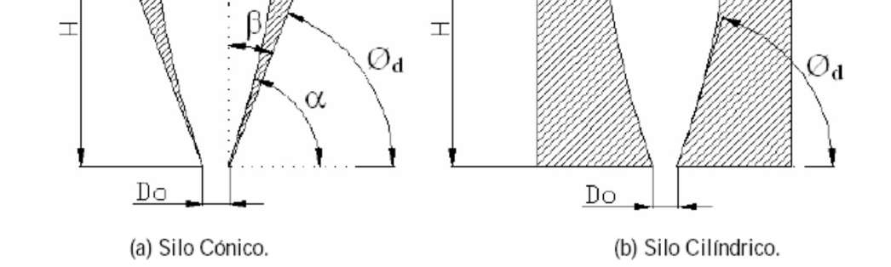

Flujo Granular
Parte II — Caudal
Unidad 6 • Geofísica de Medios Granulares
- Caudal en silos y tolvas
- Ley de Beverloo-Hagen
- Correcciones (Rose-Tanaka, Fowler-Glastonbury)
- Influencia del aire
- Efecto Janssen dinámico

Thomas Gallot & María Alejandra Aguirre — Mayo 2025
Flujo continuo en silos o tolvas — Caudal
El caudal másico \(W\) es constante en el caso del flujo de materiales granulares.
Se ha sostenido durante las últimas décadas que al igual que en los líquidos, \(W\) es controlado por la presión (altura). Se justificó que \(W\) es constante porque la presión en la base lo es debido al efecto Janssen.
PERO...
Caudal
\(\text{Caudal } Q = \dfrac{\Delta N}{\Delta t}\)
\(Q = \dfrac{C\,4}{\pi D^2}\,V\,(A - kD)\)
A velocidad \(V\) fija el caudal es constante.
La fuerza depende de la fricción dinámica de los discos y la cinta.
\(\Rightarrow\) depende de \(N_\text{discos}\), la masa de los discos y \(\mu\)
\(\Rightarrow\) La presión decrece durante la descarga
Aguirre, Phys. Rev. E 83, 061305 (2011), Perge, Phys. Rev. E 85, 021303 (2012).
Caudal
Q = dN/dt constante
Disminuye la presión media en el plano de salida
Aguirre, Phys. Rev. E 83, 061305 (2011), Perge, Phys. Rev. E 85, 021303 (2012).
Caudal — Parámetros importantes
\(W\): Flujo másico en gramos por segundo.
\(D_0\): Ancho de boca de descarga (diámetro en silos cónicos).
\(D\): Diámetro de la parte cilíndrica del silo.
\(d\): Diámetro de los granos (\(d \ll D_0\)).
\(\mu\): Coeficiente de rozamiento interno del material.
\(g\): Gravedad.
\(\rho_b\): Densidad aparente del medio.
Otros parámetros:
\(H\): Altura de la pila desde su punto más bajo hasta la boca del silo.
\(\beta\): Ángulo de la pared del silo medido desde la vertical.
\(\alpha\): Ángulo de la pared del silo medido desde la horizontal.
\(\emptyset_d\): Ángulo entre la tangente a la zona de estancamiento en el orificio y la horizontal.
Caudal — Análisis dimensional
Resulta natural suponer que el caudal \(W\) depende de los siguientes parámetros:
Si se trata de silos cónicos el ángulo de pared también influye sobre el caudal másico.
Empíricamente se encuentra que \(W\) no depende de:
- \(H\) si \(H > 2\,D_0\) y \(H > 2{,}5D\)
- \(D\) si \(D > 2{,}5\,D_0\) y \(D > D_0 + 30d\) en silos cilíndricos
- \(d\) si \(d \ll D_0\)
Con estas simplificaciones:
Teniendo en cuenta que \(\mu\) y \(\beta\) son adimensionales:
Caudal — Enfoque: 'free fall arch'

\(\rho\): densidad aparente en la salida.
\(\rho_b\): densidad en el interior.
\(\rho = C\,\rho_b\)
Caso 3D
Apertura circular de diámetro \(D_o\)
\(A = \dfrac{\pi}{4}\,D_o^2\)
Caso 2D
Ranura de ancho \(e\) y largo \(D_o\)
\(A = e\,D_o\)
Ley de Beverloo - Hagen
Beverloo, Leniger y Van de Velde (1961) expresaron sus resultados experimentales obtenidos en silos cilíndricos graficando \(W^{2/5}\) en función de \(D_0\) obteniendo una recta.

Dispositivo experimental: recipiente cilíndrico con un agujero en el fondo, para evitar la influencia del ángulo de pared.
Existe una apertura crítica \(z\) debajo de la cual no hay flujo. Observan que \(z\) depende fuertemente del tamaño de grano \(d\) y proponen una expresión modificada:
\(A\) es independiente de \(\mu\) y toma un valor constante cercano a 0.58 (excepcionalmente supera 0.64 para partículas de baja rugosidad).
\(k\) toma valores constantes (\(k \approx 1.4\)), aunque puede llegar a ~3 para partículas facetadas.
Hagen G.H.L. Poggendorffs Ann. Phys. Chem. 46, 423 (1839) / Tighe, Sperl, Granular Matter 9, 141–144 (2007).
Ley de Beverloo – Hagen: Influencia del tamaño de grano
El término \(kd\) se asocia a efectos de borde y es compatible con el efecto de anillo vacío reportado por Brown y Richards (1970): zona anular adyacente al perímetro del orificio donde la densidad de partículas es menor que en la región central.
El origen es poco claro: sugieren que puede deberse a una dilatación del medio causada por el cizallamiento cerca de las paredes de la boca de salida del silo.
La expresión modifica su exponente de 5/2 a 3/2 para celdas bidimensionales.
Esta fórmula es ampliamente aceptada y se conocen diversas modificaciones para casos particulares.
Nedderman, R.M, Statics and Kinematics of Granular Materials, Cambridge Univ. Press, 1992.
Caudal — Influencia del tamaño de grano
La correlación es relativamente válida para tamaños de grano \(400\,\mu\text{m} \lt d \lt D_o/6\).
Por fuera de ese rango se observa la aparición de fenómenos de creación de bóvedas intermitentes (y en el límite, bóvedas estables), asistidas por la influencia del aire intersticial existente en el medio granular.
Existen correcciones que aproximan este comportamiento teniendo en cuenta la importancia del fluido circundante.
Caudal — Corrección de Rose y Tanaka
La expresión de Beverloo puede ser complementada con un trabajo previo de Rose y Tanaka para silos cónicos, que tiene en cuenta la influencia del ángulo de la pared \(\beta\) respecto de la vertical y el ángulo de la zona de estancamiento \(\emptyset_d\). La expresión considerando \((D - kd)^{5/2}\):
Para \(\beta \lt 90° - \emptyset_d\):
| \(\alpha\) | \(\beta\) | \([\tan\beta\,\tan\phi_d]^{-0{,}35}\) |
|---|---|---|
| 30° | 60° | 0.82 |
| 45° | 45° | 1 |
| 60° | 30° | 1.21 |
| 75° | 15° | 1.58 |
Para \(\beta > 90° - \emptyset_d\):
La determinación de \(\emptyset_d\) debe hacerse experimentalmente, tomándose el valor de 45° para casos de ausencia de información.
Caudal — Orificios no circulares: Fowler y Glastonbury
Si el orificio de descarga no es circular, la expresión de Beverloo puede modificarse según Fowler y Glastonbury (1959):
\(D_H^*\): diámetro hidráulico de la sección no circular:
\(D^* = 4\,A^* / P_A\), con \(A\) el área y \(P_A\) el perímetro
\(A^*\): área calculada con ese diámetro.
Concepto análogo al de Mecánica de Fluidos para evacuación de conductos no circulares.
Para áreas circulares, con corrección de anillo vacío:
Caudal — Orificios rectangulares
Para un orificio rectangular de área \(a \times b\):
Corrección de anillo vacío:
\(A^* = (a - kd)(b - kd)\)
Caudal — Corrección para \(D_0\) muy pequeños
Se observa que aún para \(D_o \approx d\) el flujo no cesa completamente. Cuando \(D_o\) es chico varía la densidad aparente cerca de la salida:
Si \(k = 1\):
Únicos parámetros de ajuste: \(C' = 65\) y \(b = 0.051\).
C. Mankoc et al., Phys. Rev. E 80, 011309 (2009).
Caudal — Silos cuasi bidimensionales: Choi, Kudrolli y Bazant
Silo bidimensional: cuando su espesor solo puede albergar una única capa de granos y el tamaño del orificio de vaciado es mucho menor que las dimensiones laterales del silo.
Silo cuasi-bidimensional: cuando su espesor alberga más de una capa de material pero éste aún resulta mucho menor que el resto de las dimensiones principales del silo.
Choi et al estudiaron el flujo de microesferas de vidrio (\(d = 3\) mm) en este tipo de silo con fondo plano y con fondo inclinado.
Midieron el campo de velocidades usando la técnica de seguimiento de partículas determinando el caudal volumétrico.
Variaron el ancho de boca \(D_0\) y el ángulo de pared \(\alpha\) para el caso de fondo inclinado.
Choi J., Kudrolli A., Rosales R. and Bazant, M., Phys. Rev. Lett. 92, 174301, 2004.
Silos cuasi bidimensionales — Resultados
Comprueban que el caudal volumétrico, representado por la velocidad media, resulta proporcional a \(D_0^{3/2}\) y que aumenta con \(\alpha\).
Dependencia de la velocidad media vertical con el ancho efectivo de boca normalizado con el tamaño de grano.
\(v^* = 0.63\,\left(\dfrac{D_o}{d} - 1\right)^{1.48}\)
Dependencia de la velocidad media vertical con el ángulo de pared \(\alpha\).
Caudal — Influencia del aire
Se agrega un gradiente de presión opuesto a la gravedad.
Ecuación Carman-Kozeny
con \(u_r = u_\text{gas} - v_\text{granos-sal}\), \(K \cong 180\) (constante empírica), \(\varepsilon\): porosidad, \(\eta\): viscosidad.
Hilton J.E & Cleary P.W. Phys Rev E 84, 011307 (2011).
Influencia del aire — El reloj de arena
Bolitas de vidrio de diámetro \(d = 41\) a \(160\,\mu\)m
Cámaras aisladas (\(V = 200\) ml)
Orificio de radio \(R = 1\) mm
\(\theta = 45° – 56°\)
En particular:
- \(d \lt 40\,\mu\)m (↑cohesión), no hay flujo
- \(40\,\mu\text{m} \lt d \lt 300\,\mu\)m, intermitente — período constante
- \(d > 300\,\mu\)m (↑permeabilidad), continuo — caudal constante
Un arco se estabiliza a 0,1 o 1 mBar
Fase activa: caen granos y aumenta P en la cámara inferior ⇒ el gradiente de P detiene el flujo
Fase inactiva: el flujo de aire hacia arriba ⇒ aumentar P en la cámara superior ⇒ invierte el gradiente de P ⇒ se activa el flujo
Efecto Janssen — Influencia de la movilización de la fricción
Diámetro interno \(D_c = 51{,}1\) mm,
Diámetro externo \(D_e = 60\) mm
Altura \(H = 80\) cm.
Orificio centrado de diámetro \(d\)
(\(d = 5\) mm y \(d = 10\) mm).
Material granular:
2 kg de esferas de vidrio polidispersas de diámetro \(d_g\) obtenidas de las siguientes muestras:
(75–150) \(\mu\)m, (150–250) \(\mu\)m, (250–425) \(\mu\)m y (425–600) \(\mu\)m.
Efecto Janssen — Movilización de la fricción
Estático: llenado
Sin movilización (◊): no se observa efecto Janssen.
Con movilización (█): se observa efecto Janssen: al aumentar la cantidad de granos la fuerza sobre la base (\(M_\text{app}\)) satura (~85 g) debido a redireccionamientos de la fuerza a la pared. Se pierde cuando \(h \lt D/2\).
Dinámico: descarga
Sin movilización (—): al inicio no se observa efecto Janssen, luego el proceso moviliza la fricción por lo que hacia el final la fuerza en la base satura (~200 g). Se pierde cuando \(h \lt D\).
Con movilización (…): la fuerza sobre la base satura (~200 g) mientras decrece la cantidad de material dentro del silo. Se pierde cuando \(h \lt D\).